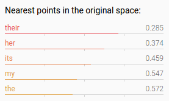

Lecture 10
Visualizing Word2Vec in TensorBoard
↓, PgDn, n, j |
next slide |
↑, PgUp, p, k |
prev slide |
Esc |
enables ctrl+f globally |
"his"
Download the word2vec_basic.py example code
TensorBoard looks for a file called projector_config.ptxt
One way to generate it is programatically.
So, we'll need to import something to help us out:
from tensorflow.contrib.tensorboard.plugins import projector
LOG_DIR = 'tb_files'
.ptxt file
embeddings = -- some NxD matrix --
config = projector.ProjectorConfig()
tb_embedding_matrix = config.embeddings.add()
tb_embedding_matrix.tensor_name = embeddings.name
tb_embedding_matrix.metadata_path =
os.path.join(LOG_DIR, "metadata.tsv")
summary_writer = tf.summary.FileWriter(LOG_DIR, graph=graph)
projector.visualize_embeddings(summary_writer, config)
saver = tf.train.Saver()
if step % 10000 == 0:
saver.save(session,
os.path.join(LOG_DIR, "model.ckpt"),
step)
train_inputs = tf.placeholder(tf.int32,
shape=[batch_size],
name='train_inputs') # <-- this